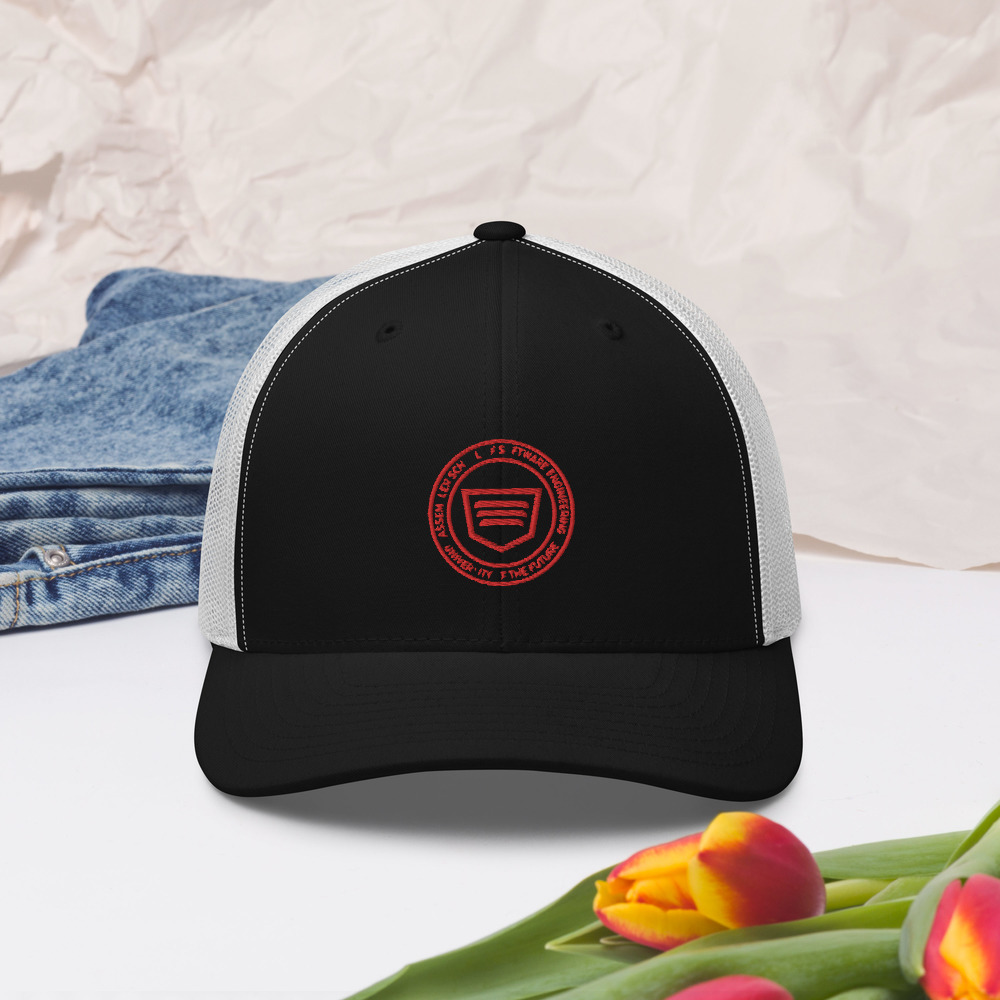
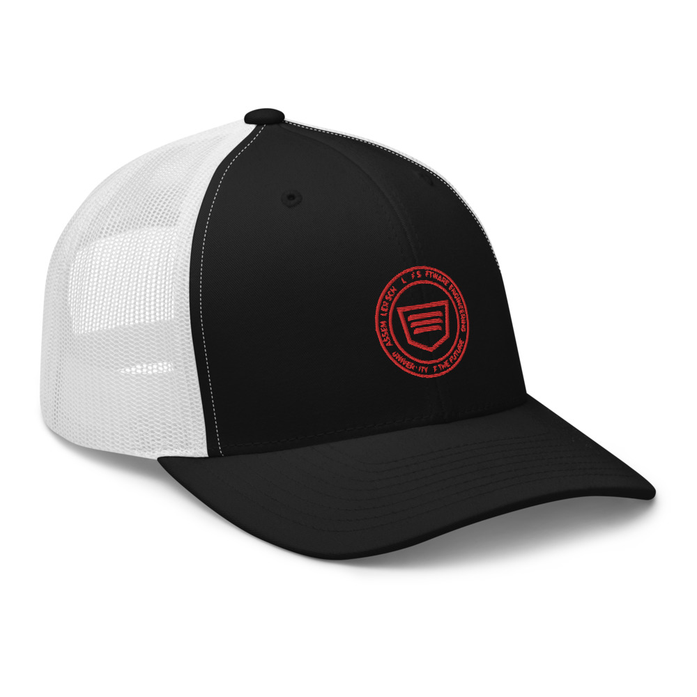
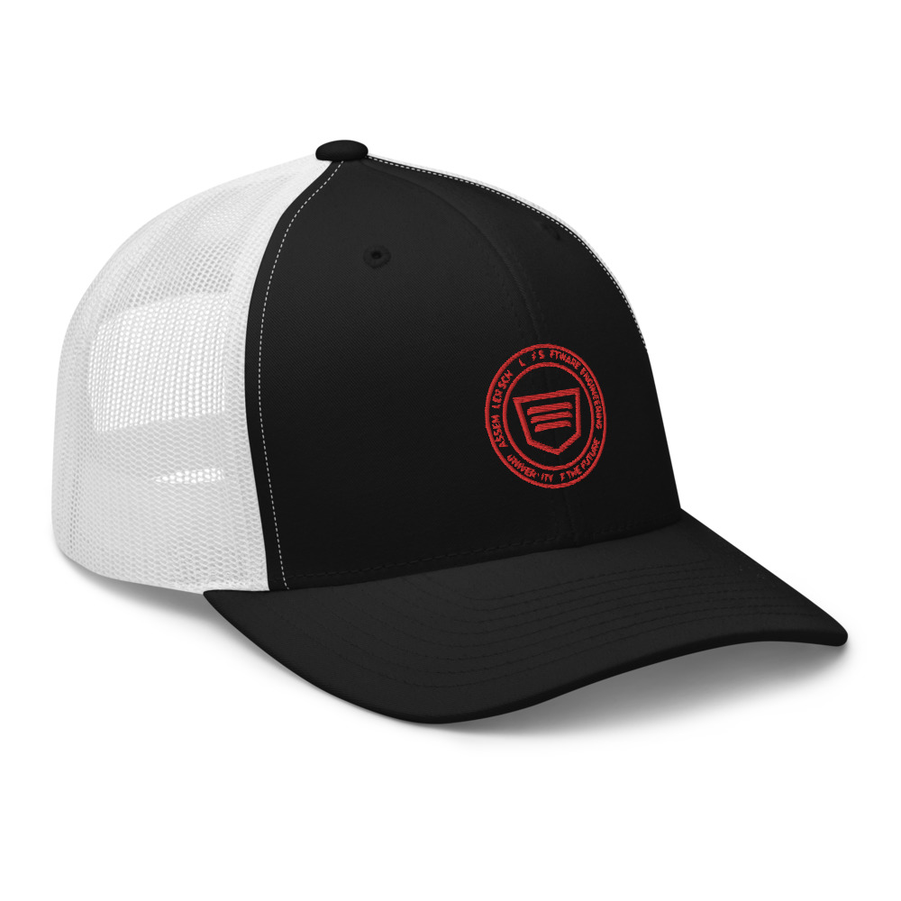
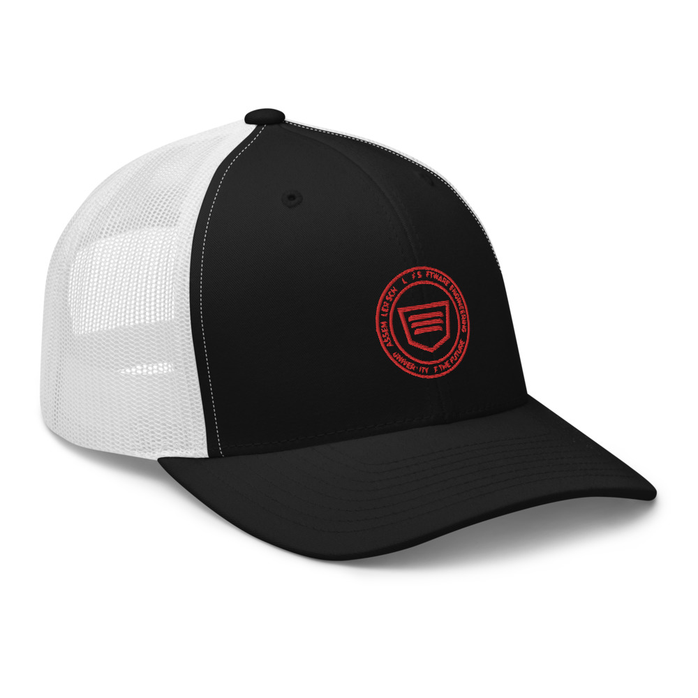

 


Assembler School
CLASSIC - Gorra
20,95€
Aplica el código 15VERANO y consigue un -15% EXTRA en lo último en
rebajas ¡Queda poco tiempo!


Guía de tallas
Cómo encontrar tu talla1. CABEZARodea tu cabeza con una cinta métrica flexible a la altura de las sienes, justo por encima de las cejas. Usa esa medida para determinar tu talla de gorra. Encuentrala talla adecuada de explicar que de hacer. Porque, ¿y si estás justo entre dos tallas? En ese caso, te recomendamos que elijas la talla más grande. ¿Y sabes qué? Puedes probarte la ropa en casa. ¿Y si no es tu talla? ¡No te preocupes! Puedes devolver los artículos en un plazo de 7 días. Para más información, consulta nuestra política de devoluciones.